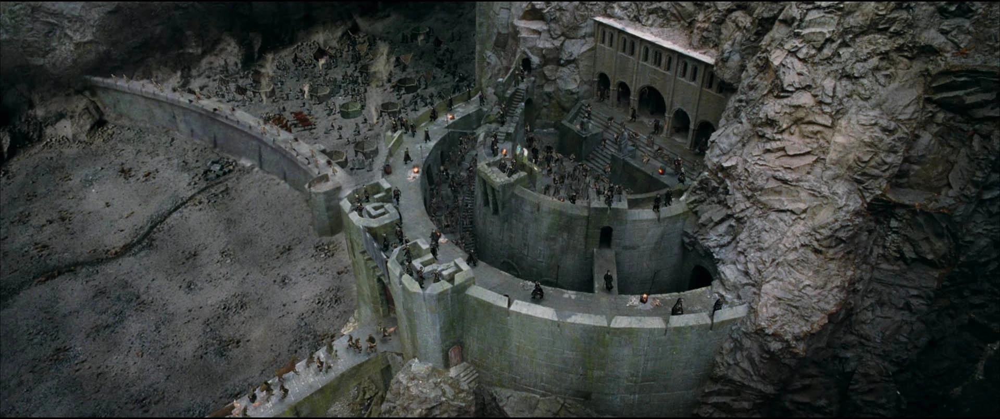
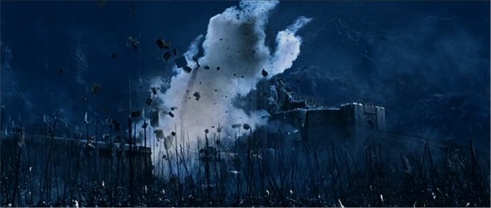
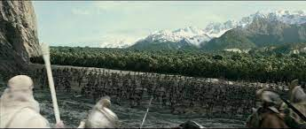

Prelude:
After being freed by Gandalf from Gríma Wormtongue's influence, Théoden rode for the Fords of Isen where Erkenbrand was battling Saruman's Orcs. As Théoden rode west, he met Ceorl, who informed him of Erkenbrand's defeat. Unable to meet Saruman's force head-on with his small force, Gandalf advised him to ride straight to the Hornburg where many of the people of Westfold were taking refuge in the Glittering Caves. A local captain called Gamling the Old led the garrison of about a thousand men. With the arrival of Théoden, the defenders' strength was just under three thousand men, allowing the defences to be fully manned.
The army of Rohan consisted of 1000 cavalry forces from Edoras led by King Théoden. This force included Aragorn, Gimli, Legolas, and Théoden's nephew Éomer. This army joined with Rohan's garrison of around 1000 at the Hornburg.
The army was reinforced by 1000 scattered Rohirrim troops from the Westfold rallied by the Wizard Gandalf and led by Erkenbrand. A forest of Huorns entered the valley independently, seeking revenge on Saruman's Orcs.
The army of the corrupted Wizard Saruman, amassed both in service and in competition of his Lord Sauron, consisted of his Orcs, mainly his specially bred Uruk-hai and Half-orcs, supported by Dunlendings. It was mentioned to consist of "about ten thousand Orcs", with an unknown but far smaller number of Dunlendings.
Battle:
Sauman's army would arrive at the fortress at midnight on March 3. The Orcs quickly overran the first defense of Helm's Dike, but sustained many losses to the rearguard, "filling up the dike to the top". After moving past the dike, the Orcs approached the fortress of the Hornburg and sent arrows into the fortress. However, they did not get any response. But when they got closer they were met with a volley of arrows and rocks which made them break ranks. The Orcs soon got close enough to Hornburg and attempted to break the gate down with tree trunks, but were scattered by a small attack team led by Aragorn and Éomer from a postern-door that ran between the brink of the cliff and the wall of the Hornburg.
After the team had driven back the Orcs with the ram, they retreated from the new assault upon the gate. While running back, two Orcs who had faked their deaths knocked Éomer to the ground. As Aragorn ran back to save him, a hidden Gimli hewed the Orcs' heads, saving Éomer and giving Gimli his first two kills to Legolas' twenty.
The attackers then raised hundreds of ladders to scale the Deeping Wall; the defenders threw down the ladders, but were attacked from behind by Orcs who had crawled through the culvert at the base of the Deeping Wall. Gimli and Gamling the Old with a unit of men from the Westfold attacked the Orcs who got through the hole. Gimli, after getting twenty-one kills to Legolas' twenty-four, helped block the culvert with stones, flooding the stream.  Unfortunately, this blockage was destroyed along with a good portion of the Deeping Wall by Saruman's devilry; the Fire of Orthanc.
A huge host of Orcs poured into the new breach, and after a desperate battle in the Deep, some of the defenders led by Éomer, Gimli and Gamling retreated into the Glittering Caves while Aragorn, Legolas and the remainder fought their way into the keep via a stairway from the Deep to the fortress. During the retreat, Aragorn stumbled and was almost overcome by Orcs; but was saved by Legolas and a boulder that was cast down upon the Orcs from the wall.
Just before dawn, Aragorn called for a parley at the gate and told the Orcs that they would die if they didn't surrender, but the Uruk-hai laughed at his threat and attempted to shoot Aragorn down, almost killing him. The Orcs then blasted open the gate, destroying the arch with the 'blasting-fire'. Suddenly, Théoden and Aragorn led a powerful cavalry charge out of the keep to the blasts of the great horn of Helm Hammerhand, followed by the defenders of the Hornburg, driving the Uruks away from the remains of the gate.
At the same time, Éomer and Gimli with the company in the caves pushed the Orcs out of the Deep. The army of the Mark drove the enemy behind the Dike into the Deeping-coomb.Just then, Gandalf on his horse Shadowfax arrived with Erkenbrand and a thousand-foot soldiers. They charged Sauraman's host, trapping them between Erkenbrand's army, Théoden's army, and a newly appeared forest of strange trees. The Dunlendings dropped their weapons and surrendered, while the Uruk-hai fled into the forest.
Aftermath:
One of the Rohirrim dead was Háma, a captain of Théoden's personal guard and doorward of Meduseld, whose body the Orcs hewed after he died. Nonetheless, the refugees in the Glittering Caves were safe in their entirety, and thus returned to their homes. Gimli had lost his helmet in the battle and was wounded badly on the head, but he had killed forty-two Orcs to Legolas' forty-one.
The surrendering Dunlendings were spared and given amnesty by Erkenbrand, much to their surprise, as Saruman had claimed that the men of Rohan would burn all survivors alive. The Dunlendings would be required to retreat behind the River Isen again and never re-cross it bearing arms. At Erkenbrand's orders, the Dunlending prisoners were put to work repairing the damage to the Hornburg before being sent home. The slain Dunlendings were buried in a communal mound, while the Orc carcasses were simply piled off to the side of the battlefield and left to rot.
Less than half of the 10,000 Uruk-hai who had survived the main battle had fled into the strange forest, where they were never be seen again, as this was actually the newly arrived Huorns from Fangorn. At night, unseen by the Rohirrim, the Huorns slew all remaining Uruks and buried them in a hill later known as the Death Down.
Losses:
| Rohan | Isengard | |
|---|---|---|
| Casualties |
Rohirrim: Heavy losses ~ 700-750 |
The entire force of Uruk-Hai many Dunlendings slain, the rest surrendered |
| Leaders Lost |
Háma |